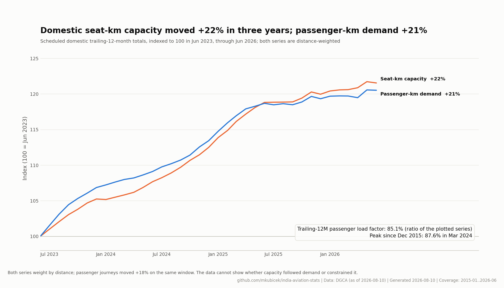
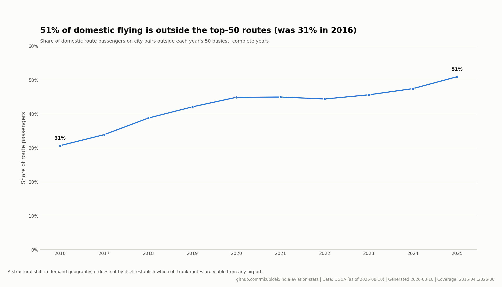
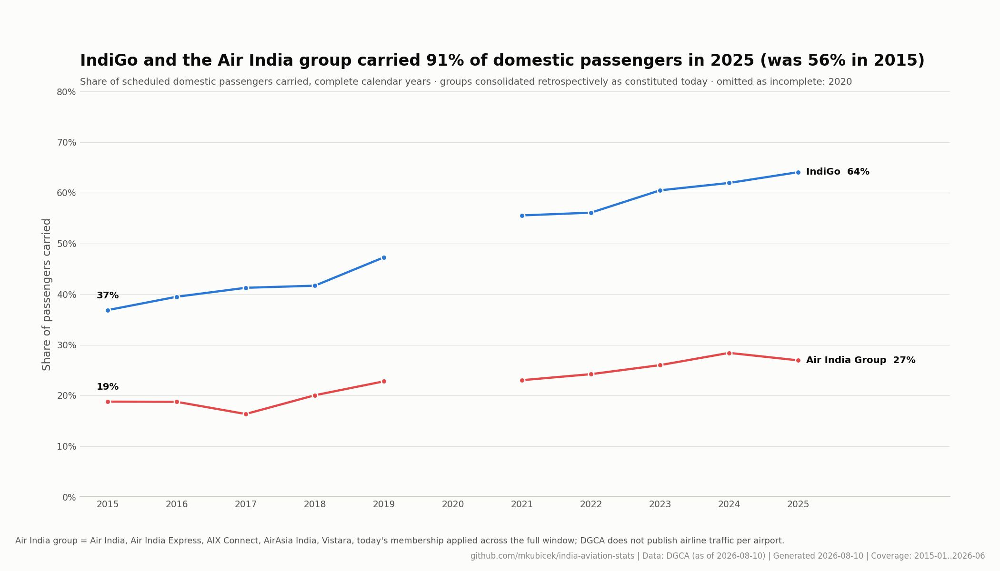
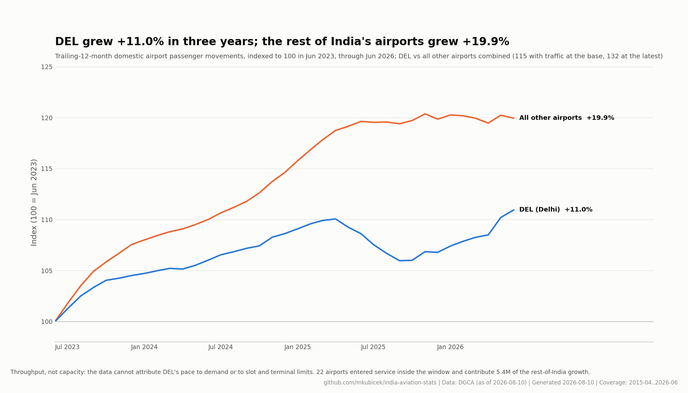
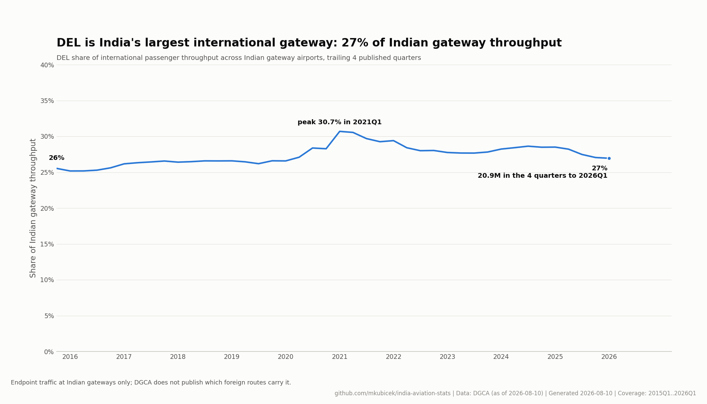
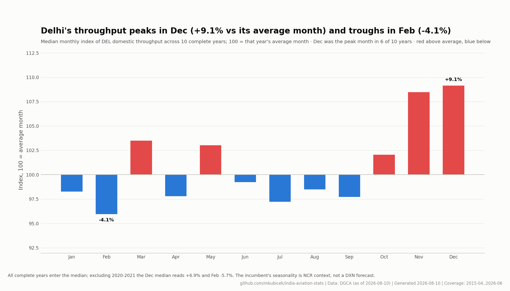
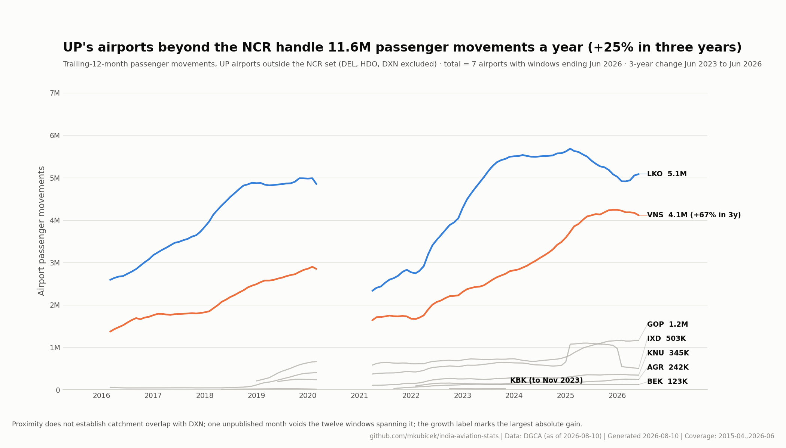
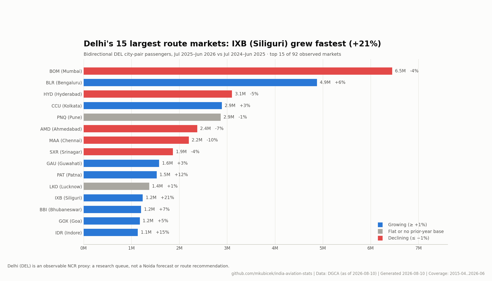

Noida International Airport (DXN) · DGCA data
The market Noida enters, in charts
The national market a new Delhi-region airport joins, the region it serves, and the ramp-up playbook written by India's other dual-airport systems. Every number is computed from published DGCA tables, every chart carrying its own caveat.
The market Noida enters
Every early Noida number reads against this national baseline.

Capacity-led and demand-led pauses have different implications for a market entrant; the two series separate them.

The realistic opportunity for a new airport is the middle market, not the metro trunk.

How much demand sits beyond the metros, and beyond the Tier-1 cities, frames what a second NCR airport can serve directly.

Two groups carry most of India's domestic passengers; that is the counterparty structure any new airport faces.

The region
The capital region's depth is the structural case for a third airport.

How fast the incumbent grows against the rest of the country frames the spillover case.

Delhi is the international benchmark a second NCR airport gets measured against.

Slot planning starts with the shape of a Delhi year, not its size.

Catchment context: the traffic Uttar Pradesh's own airports already handle.

Delhi's observable markets are the research queue for Noida's route development.

The playbook
The bounding curves (scale-up, replication, flatline) frame first-24-month expectations.

Navi Mumbai is the closest live analogue; its monthly share of the Mumbai system is the leading indicator.
Incumbent versus system is the relief-valve question; Navi Mumbai gives the first observed read.

Ramp-ups move in steps, not with time, and the steps can reverse.

Claims tested against the data
Common counter-narratives, checked against the same tables as the exhibits. Verdict wording derives from the computed numbers on every refresh.
- “A second airport mostly cannibalizes the incumbent.” Not supported so far (6 published months): BOM moved -3.3% and the two-airport system +8.2% against the same months a year earlier; BOM's shortfall equals 29% of NMIA's volume.
- “Hindon proves the Delhi region cannot fill a second airport.” Rejected: Hindon never topped 3K in a published month for 4 years (38 of 48 months published), then reached 159K in Aug 2025; by Jun 2026 it was back to 44K.
- “Growth is re-concentrating into the metros.” Rejected: the non-metro share of national throughput rose from 35% in 2016 to 43% in 2025.
- “Airlines have stopped adding domestic capacity.” Rejected: seat-km capacity grew +2.3% in the latest 12 months, while passenger-km demand grew +1.5%.
- “The domestic market is fragmenting across many carriers.” Rejected: the two leading groups' combined share of passengers carried rose from 56% in 2015 to 91% in 2025.
- “Noida opens into empty white space no airline serves.” Largely rejected: only 11 of 89 domestic airports above 100K annual route passenger movements have no observed DEL route (Jul 2025-Jun 2026), led by TCR (Thoothukudi (Tuticorin)) at 273K.
What this data cannot tell you
Limits of the source data. None of the following is observable in DGCA's published tables.
- Noida itself. DGCA has published 1 DXN month so far (from Jun 2026, shown on the ramp benchmark); an opening month is a partial observation, and nothing here is steady-state NIA performance.
- Airline commitments. DGCA reports flown traffic, not schedules, fleet plans, or base decisions; the single biggest ramp-up driver is invisible here until it flies.
- True origin–destination demand. Airport rows are endpoint throughput and route rows are segments; connecting itineraries cannot be separated from local demand.
- Fares and yields. No public Indian fare series is published at a granularity that joins to these tables.
- Capacity ceilings. Aircraft movements, slots, and terminal limits are operator and AAI data; DGCA passenger tables cannot show how full DEL's runways are.
- Surface catchment. Who drives to which airport is not aviation data; UP airport traffic shows regional demand, not DXN's future share of it.
- Cargo by airport. DGCA carrier freight is airline-level; airport-wise cargo volumes are published by AAI, not here.